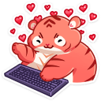

К. медленно, совершенно нехотя, продираясь сквозь сон, открыла глаза. Первое, что она увидела - спина В. Первое, что она почувствовала - невыносимые спазмы внизу живота. Попытавшись сесть, девушка осознала, что совершенно не может этого сделать - хотелось свернуться клубочком и скулить. А ещё хотелось есть.
К. проверила время на своём телефоне - 11:04. "Наверняка он опять лёг в пять утра". Снова попытавшись принять хотя бы сидячее положение, девушка поморщилась, и всё же её попытка увенчалась успехом. Осталось только встать и пройти до кухни. Не получилось. Ещё раз. Не получилось. К. осторожно прикоснулась к плечу спящего парня.
- Проснись, сонечко.
Реакции не последовало.
- Пожалуйста, проснись, - скулила девушка. В. лишь нахмурился и попытался отвернуться во сне.
- Мне очень больно из-за месячных, и я хочу кушать, но не могу дойти до кухни.
- Так нам не надо... никуда идти... - парень обнял её за руку, всё ещё не открывая глаз и перепутав с подушкой. - Спи...
К. тихо рассмеялась, потом зашипела от новых спазмов. Нужно дойти до кухни, где есть еда и болеутоляющие. Когда девушка, держась за стену, наконец смогла выйти из комнаты, к ней подбежал маленький комочек - младшенький из кошачьих в доме.
- Мряу? - он потёрся о её ногу.
- Сейчас-сейчас, я тебя покормлю.
Доковыляв до заветной комнаты, К. первым делом отыскала блистер горьких противных таблеток, которые сейчас ей казались самыми желанными на свете. Вторым делом она достала корм, и на запах и шум на кухне появилась ещё одна кошка. Несколько минут спустя девушка тоже завтракала, разнося по всем помещениям запах кофе. Когда к ней на колени запрыгнула кошка, она отложила телефон.
- Кто здесь такая хорошая девочка? Кто здесь такая маленькая умница, мм? - с приторным голосом К. принялась гладить пушистика по щекам и почёсывать за ушами.
- Ты, конечно.
В. подошёл к девушке и поцеловал её в лоб. Она улыбнулась и пожелала ему доброго утра.
- А ты чего так рано встал? Нам же не надо никуда идти, - выделив последнюю фразу, она со смешинками в глазах смотрела, как парень наливает себе чай.
- А? 
Назад